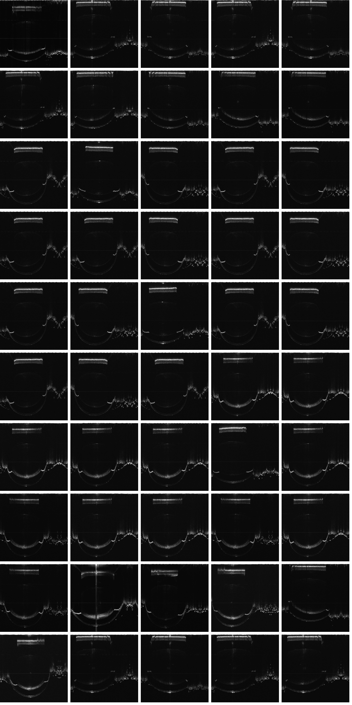
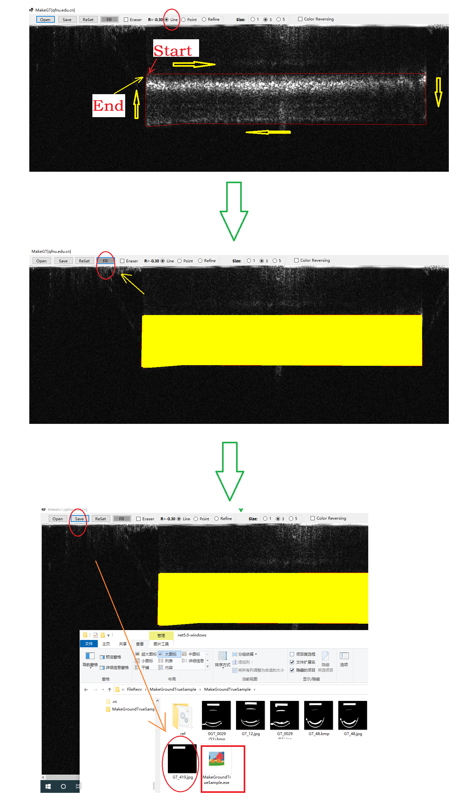

Optical Coherence Tomography Mice Eye(OCT-ME) |
||
|---|---|---|
-------------------------------------------------------------------------------------------------------------------------------------------- Specific-patch Support Vector Machine for binarization 2021.10.26, update 2022.01.16., Permission to use copy, or modify this dataset, tool and codes for educational and research purposes. E-mail : mafei0603@163.com Homepage : https://mip2019.github.io/spsvm -------------------------------------------------------------------------------------------------------------------------------------------- 1. Dataset Description
1.1 Optical coherence tomography (OCT) angiography has drawn much attention in the medical imaging field. We collect a new OCT mice eye (OCT-ME) database, which will be publicly released soon. A total of 50 images taken from mice in vivo are recorded by OCT. The size of each image is 2048*2048 pixels. The eye of mouse generally contains four organs, such as retina, lens, iris and cornea. Due to the limitation of page space and network bandwidth, we resize the images as 512*512 for view. As shown in Fig.1, we can see that the background and foreground of some organs are low-contrast.
|
||
| 2. Application Tool and code Download
2.1 The making ground-truth tool developed by our team can be downloaded with URL：MakeGroundtruthTool_v1.01 (windows desktop app at .netframework2.0).This software is a specialized tool to make the ground truth from original samples under complex scene. The ground-truth images can be obtained by this tool with the help in Fig.2, which is developed by our team. This application is run under .netframework2.0(win-x64) with windows 10 (x86 or x64). 2.2 The ground-truth tool developed by our team can be downloaded with URL：MakeGroundtruthTool_v1.0 (windows desktop app at .net 5.0).This software is a specialized tool to make the ground truth from original samples under complex scene. The ground-truth images can be obtained by this tool with the help in Fig.2, which is developed by our team. This application is run under .net 5.0 runtime(win-x86) with windows 10 (x86 or x64). 2.3 The code of our SPSVM for demo can be downloaded here (MATLAB R2016a). 2.4 The code of our Kmeans_OCT for demo can be downloaded here (MATLAB R2016a). |
||
|
-------------------------------------------------------------------------------------------------------------------------------------------- FIGURE 1 The thumbnail view of the OCT-ME -------------------------------------------------------------------------------------------------------------------------------------------- FIGURE 2 The help for the ground-truth tool |